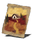

Descrição: Milagre que retorna seu conjurador à fogueira em que descansou por último. Tradicionalmente, seu destino era a terra natal do conjurador.
Os amaldiçoados sofrem uma lenta corrosão da memória pela maldição, até que sua terra natal seja reduzida a um fragmento de um passado nebuloso. Mas as fogueiras são constantes, um farol para os tragicamente aflitos.
Localização:
Usos: 1
